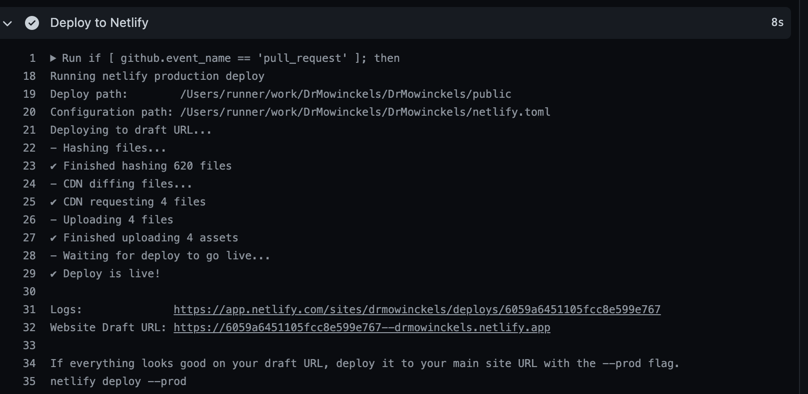

Categories:
Tags: hugo, Continuous Integration, GitHub Actions
Lately, I’ve been doing some work in getting Hugo websites building through Github actions, and then have them deployed with Netlify. Of course, once we are building with GitHub actions we could also just use GitHub pages to deploy, and I’ll show how you can do that too, even if I will keep using Netlify.
Well, there is definitely good reasons to let Netlify do all the work for you. The less you are doing your self, the less you have to maintain, and long-term maintenance of things can take a toll. All of us adopting blogdown early on feel this acutely, there was absolutely some pains in updating themes and hugo and blogdown, and rendering of old pages etc. It was easy to get started, harder to keep going.
But there are also downsides. For instance, to build on Netlify, you need all your content version controlled, in my case with git, and stored on GitHub. This is fine and dandy for text files like markdown and Rmarkdown, csv data, and images that will not change often. So, for blogging etc, this is totally fine. We won’t be re-knitting blogposts over and over and hence commit new images to version history, that would inflate our repository size pretty quickly, and we don’t want that. But what if you want to have data on your website that does not live in the git history?
In my case, I have a page with information about me. This page contains a plot of my publication citations, and also a knitted academic CV in pdf. These are files I don’t want in my history, blowing up my repository size at every knit. And at every knit is often in my case, as I update them daily through GitHub actions (I’ll get to that shortly) so that people can get update information about my research activities without me having to do too much work on that aspect of it.
This is where GitHub Actions shines. GitHub Actions is a service that runs Continuous Integration, meaning that using a set-up file you can ask workers (computers run by GitHub) to do certain operations on your repository at certain triggers (at push, pull-requests or even on a schedule with crontab). This if often used for package and pipeline testing, but can also be used to build your website!
What we want is Github Actions to run certain operations on a set schedule, build our website with hugo, and then trigger a Netlify deployment.
In particular, we want to render the content/about.Rmd and knit my CV which is located in content/about/resume/am_mowinckel_cv.Rmd, and not commit these to git, just have them rendered right before Hugo build
First, you’ll need to have your website repository on GitHub. There are other CI services one can use, but GitHub is free and so are its actions for small jobs like what we want to do.
To create a setup file, I turn to the trusty {usethis} package. Its just so damn convenient! We’ll base our workflow off the “blogdown” action, which conveniently sets up a lot of logics for us so we don’t have to.
usethis::use_github_action("blogdown")
✓ Setting active project to '/my/path/to/DrMowinckels'
✓ Writing '.github/workflows/blogdown.yaml'
● Learn more at <https://github.com/r-lib/actions/blob/master/examples/README.md>
You’ll now see a new file in a nested folder structure needed for GitHub actions to pick up your setup: .github/workflows/blogdown.yaml.
We’ll open this file and have a look at it’s content and see what we can figure out.
Github Action files are written in yaml, which should be somewhat familiar for Rmarkdown users, as its the same type of content language as the front matter of Rmarkdown files. Convenient!
The top part reads as follows:
on:
push:
branches:
- main
- master
name: blogdown
on: dictated when the job should be run. In this case, the default is on push to the branches master and main.
and name: blogdown gives the job a name we can see in the Github Actions site online.
We’re going to re-write this a little. With this setup, we’ll only render on push to the main/master branch, but its a good idea to also get previews of what you are working on, before pushing to master. So we will add rendering also when there are pull_requests to master/main.
on:
push:
branches:
- main
- master
pull_request:
branches:
- main
- master
Additionally, we want it running on a set schedule. I update mine at 1AM UTC. You can read more about the cron time syntax online. But remember that GitHub Actions run on UTC time, so think about that when you specify the timing of your job and when you expect it to run.
on:
push:
branches:
- main
- master
pull_request:
branches:
- main
- master
schedule:
- cron: '0 1 * * *'
I’m also going to change the name, because we’re technically not using blogdown for this, we’ll be using something a little more custom.
name: Build and deploy
After this, comes the longer list that sets up the jobs specifics.
jobs:
build:
runs-on: macOS-latest
env:
GITHUB_PAT: ${{ secrets.GITHUB_TOKEN }}
This part first declares that here comes the specifications of jobs to do.
We will be building on macOS-latest, meaning the site will be rendered using the lastest GithHub image of MacOS.
Then, we can declare global environment variables, and in this case, its the GITHUB_TOKEN for you repository.
You do not have to declare it in any other way, GitHub actions has this information stored for you.
After this, we can start declaring the steps of the process we are making.
steps:
- name: Checkout repo
uses: actions/checkout@v2
- name: Setup R
uses: r-lib/actions/setup-r@v1
- name: Install pandoc
run: |
brew install pandoc
The first part checks out the repository, meaning the worker gets a local clone of the repo to work with.
Then it gets R installed and setup on the worker, so we can run our R-things on it.
And then, we get pandoc which we need to render Rmd to md or html (or even pdf in my case).
In my case, I needed to add a little oiece to the checking out of the repo.
I have my theme not as a simple theme folder, but as a git submodule of the theme, a theme which I have custom adapted and am working on getting ready for others to also be able to use.
Again, there are pro’s and cons of using a submodule, but in my case I’ve now a decent setup I like, if you don’t use it, you can skip this next step.
I need to tell the checkout step, that it should also checkout and clone the submodule repositories into their locations (in my case into themes/).
The information on the location, git remote and compatible hash of the theme to my repo is all stored in the repo’s git history, so checking it out is not a big extra step.
# replace this
- name: Checkout repo
uses: actions/checkout@v2
# with this
- name: Checkout repo
uses: actions/checkout@v2
with:
submodules: recursive
If you have more submodules, it will get them all. If you my some chance are checking out a private repo as a submodule, you’ll need to do some more work to get it working.
I also experienced a little trouble with the pandoc installed by the brew, as my CV knitting needed a specific version to work, so I also replaced the pandoc step with
- name: Setup pandoc
uses: r-lib/actions/setup-pandoc@v1
with:
pandoc-version: '2.12'
The next bit gets you sorted with renv if you use that. I don’t, so I’ve deleted it from mine.
I likely should get started using it, but I just have not sat down to get into it yet.
- name: Cache Renv packages
uses: actions/cache@v2
with:
path: $HOME/.local/share/renv
key: r-${{ hashFiles('renv.lock') }}
restore-keys: r-
- name: Install packages
run: |
R -e 'install.packages("renv")'
R -e 'renv::restore()'
The next bit gets hugo installed.
- name: Install hugo
run: |
R -e 'blogdown::install_hugo()'
If this works for you, that is cool. Keep on keeping on! I love it when default stuff works.
For me, I needed a little other things to work, and I set it up before I found ways to work with blogdown in that way.
You might have a theme that requires extented hugo, in which you can add the extended = TRUE argument to the function to get that.
I’m a little weird, and prefer using a hugo action for setup.
Mainly because I started this process with the idea of not needing to install blogdown on the worker (something I’ve ended up with anyway).
I rather use a hugo action created by someone else, where I specify version and if its extended in the action it self.
- name: Setup Hugo
uses: peaceiris/actions-hugo@v2
with:
hugo-version: '0.81.0'
extended: true
Now, I’m going to skip ahead, the next setp in the default is to build the site, which is not what we are going to do just yet. For my part, my theme needs a couple of extra javascript things to work, and I need to set them up on the worker, else my theme will look like a hot mess.
My theme relies on postcss and autoprefixer which I have installed locally with npm.
This is farily straight forward for me on my mac.
When I installed these to me website repo, I also got a file called package.json.
npm uses this file to track the libraries needed for a project to run, and to easily install them later.
So rather than me having tos pecify exactly which npm libraries to install (and updating that every time I might add something new), I just let npm take that information from the package.json.
If you have these dependencies in your theme, make sure to add package.json to your version history, but omit package-lock.json. The latter will screw things up on the CI, put it in your .gitignore!
In addition to the npm libraries for my theme, I also need the netlify API client, which can also be installed via npm. So we set up a step for that:
- name: Install npm packages
run: |
npm install netlify-cli -g
npm install # reads info from package.json
Cool cool cool.
We now should have all the software we need installed on the worker.
Next is to get the R-packages we need to build the about-page and the CV.
This is likely where using renv would have made my life easier, I hope to get there at some point.
- name: Install R packages
run: |
install.packages(c("tidyverse", "scholar", "remotes", "vitae", "rorcid", "glue", "rmarkdown", "blogdown", "tinytex"), Ncpus = 2)
tinytex::install_tinytex()
shell: Rscript {0}
The syntax should be familiar to R-users. I’m installing a bunch of packages using the 2 CPU’s available in a standard action. And then I install tinytex, in order to render Rmd to pdf.
Now we finally get to the rendering!
- name: Render about me & cv
run: |
blogdown::build_site(local = FALSE,
run_hugo = FALSE,
build_rmd = "content/about/_index.Rmd",)
rmarkdown::render("content/about/resume/am_mowinckel_cv.Rmd")
shell: Rscript {0}
env:
ORCID_TOKEN: ${{ secrets.ORCID_TOKEN }}
I render the about page and cv in the same step, to keep the steps clean and distinct.
I use blogdown to render the about me page, because it renders a type of md where the front-matter yaml of the Rmd is kept, as hugo uses this for page rendering.
Then I use rmarkdown to render the cv (which is made based on a vitae template).
Here I also specify an environment variable to use, my ORCID_TOKEN.
My CV is based on information from my ORCiD account, which is a fairly common research ID system.
The token is saved as a secret in my github repository, something you can read more about if you need something similar.
All right, cool. We have all the stuff! Lets build the website!
- name: Build site
run: hugo
This will create all the files for my website in the public folder.
Neat-O!
If you want to build your site into another folder that public you can specify this in the command.
For GitHub, I’m assuming here that you might rather want to use the docs folder to render GitHub pages from that, which you could do with
- name: Build site
run: hugo -d docs
But note, if this is your intent, the repo will increase in size as it keeps adding every entire pdf and image to version history every day. Because if you use GitHub pages to deploy the page, the entire docs folder must be commited to the repo history.
Your next step would then be to do that:
- name: Commit results
run: |
git config --local user.email "actions@github.com"
git config --local user.name "GitHub Actions"
git commit docs -m 'build site' || echo "No changes to commit"
git push origin || echo "No changes to commit"
This bit will commit the entire docs folder to history and push it into you repository. You’ll then need to get GitHub to render a website from that folder, which you can read more about if that is what you need.
In my case, I don’t want to use GitHub pages, I don’t want these things in my repo history inflating it rapidly. So I’m going to get it off to Netlify.
- name: Deploy to Netlify
env:
NETLIFY_AUTH_TOKEN: ${{ secrets.NETLIFY_AUTH_TOKEN }}
NETLIFY_SITE_ID: ${{ secrets.NETLIFY_SITE_ID }}
run: |
if [ github.event_name == 'pull_request' ]; then
echo "Running netlify preview deploy"
netlify deploy
else
echo "Running netlify production deploy"
netlify deploy --prod
fi
There’s quite some stuff going on here, so let’s break it down. Firstly we are declaring two environment variables from github secrets. Emil Hvitfeldt has an excellent walk through of how to obtain and set these on GitHub, so you should take a look at his tutorial to make sure you have it right. These two secrets lets Netlify know that we have the right to deploy our stuff to them, it’s authenticating our worker as us, basically.
Then, there is an if statement. Now, at the very start we set the job to run on push, pull_request and on schedule, but given these actions the deployment should be different.
I don’t want my website to be overwritten by a pull_request of me testing out some new features of a theme or checking if a blogpost is going to be rendered correctly before I push it to master!
I want to use pull_requests as previews of what the site will look like in the end. SO I can catch any mistakes before deploy the true website.
So, the if statement first checks if this is a pull_request, and if it is, it will run netlify deploy which renders a preview site.
For any other instance (which is puch to master/main or on schedule) it should run netlify deploy --prod signalling to netlify that this is the true production website and should be deployed to the production url.
All in all, I now have a setup file that looks like so:
on:
pull_request:
branches:
- main
- master
push:
branches:
- master
schedule:
- cron: '0 1 * * *'
name: Build site
jobs:
render:
name: Build site
runs-on: macOS-latest
env:
GITHUB_PAT: ${{ secrets.GITHUB_TOKEN }}
steps:
- name: Checkout repo
uses: actions/checkout@v2
with:
submodules: recursive
- name: Setup R
uses: r-lib/actions/setup-r@v1
- name: Setup pandoc
uses: r-lib/actions/setup-pandoc@v1
with:
pandoc-version: '2.12'
- name: Setup Hugo
uses: peaceiris/actions-hugo@v2
with:
hugo-version: '0.81.0'
extended: true
- name: Install npm packages
run: |
npm install netlify-cli -g
npm install
- name: Install R packages
run: |
install.packages(c("tidyverse", "scholar", "remotes", "vitae", "rorcid", "glue", "rmarkdown", "blogdown", "tinytex"), Ncpus = 2)
tinytex::install_tinytex()
shell: Rscript {0}
- name: Render about me & cv
run: |
blogdown::build_site(local = FALSE,
run_hugo = FALSE,
build_rmd = "content/about/_index.Rmd",)
rmarkdown::render("content/about/resume/am_mowinckel_cv.Rmd")
shell: Rscript {0}
env:
ORCID_TOKEN: ${{ secrets.ORCID_TOKEN }}
- name: Build site
run: hugo
- name: Deploy to Netlify
env:
NETLIFY_AUTH_TOKEN: ${{ secrets.NETLIFY_AUTH_TOKEN }}
NETLIFY_SITE_ID: ${{ secrets.NETLIFY_SITE_ID }}
run: |
if [ github.event_name == 'pull_request' ]; then
echo "Running netlify preview deploy"
netlify deploy
else
echo "Running netlify production deploy"
netlify deploy --prod
fi
It might look huge and intimidating, but I hope my break down of it helps you out.
Committing this file to git history and pushing it to master will trigger a github Action to start.
Going to your GitHub repository, you should locate the Actions pane, and have a look at it as it works.
You will likely need to trouble shoot some stuff as things error, untill you have a setup that works seamlessly.
Don’t be discouraged, you can do it!
Once its done, you can have a look at the Deploy to Netlify click on the deploy URL and see how it looks.

Now you have a neat action building your site without increasing its size needlessly :)
Dr. Mowinckel (Mar 23, 2021) Using GitHub Actions to Build your Hugo Website. Retrieved from https://drmowinckels.io/blog/2021-03-23-using-github-actions-to-build-your-hugo-website/
@misc{ 2021-using-github-actions-to-build-your-hugo-website,
author = { Dr. Mowinckel },
title = { Using GitHub Actions to Build your Hugo Website },
url = { https://drmowinckels.io/blog/2021-03-23-using-github-actions-to-build-your-hugo-website/ },
year = { 2021 }
updated = { Nov 3, 2023 }
}